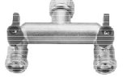
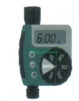
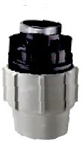

robinet 2 voies entrée 3/4" - 2 sorties 3/4"Une sortie pour l’arrosage, l’autre reste au client.Réf. BRO3493, page 52

Programmateur nez de rob. SOLEM BL - NR - 1 voieSolem, en Bluetooth comme le BL-IP. Une seule voie.Réf. SP1151, page 26

PROG BUDDY TAP TIMER 1 STAT. ou 2 STAT.Orbit, à visser sur la sortie du robinet. Une ou deux voies.Réf. AEV11401 et AEV11422, page 25

raccord femelle 16 x 3/4", 25 x 3/4" ou 32 x 3/4"Plasson. Il se visse sur la sortie 3/4" et prend le Ø16 rigide, le Ø25 ou le Ø32.Réf. OPL70301620, OPL70302520, OPL70303220, page 30